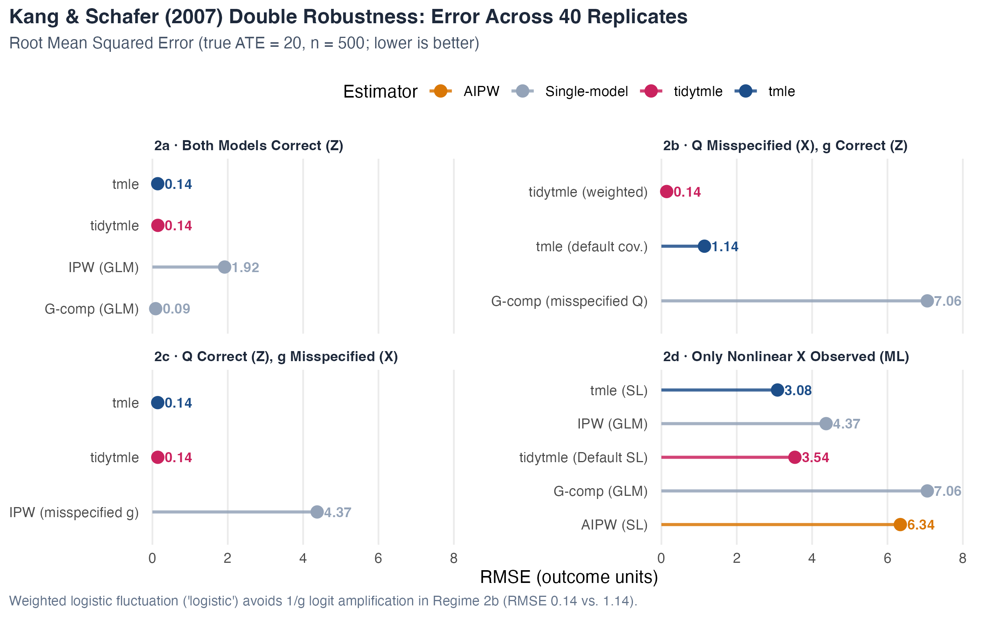
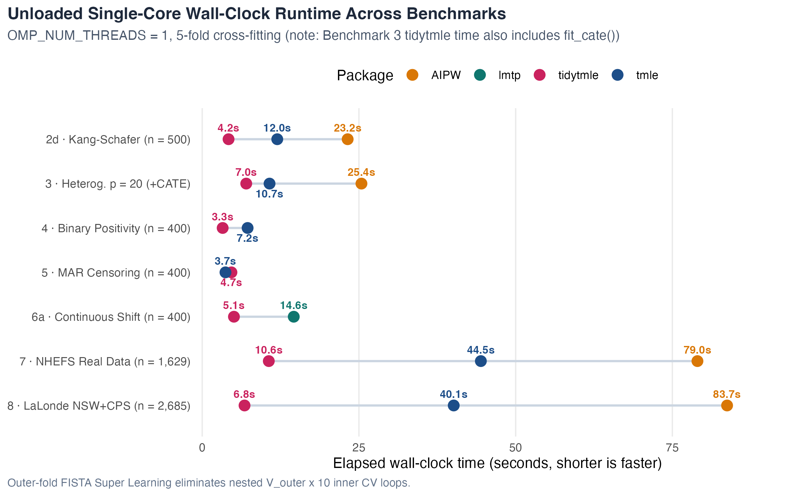

Benchmarks, Double Robustness & Validation Against Existing TMLE Packages
Source:vignettes/benchmarks-and-validation.Rmd
benchmarks-and-validation.RmdTrustworthy causal inference software demands more than clean syntax—it must reproduce exact semiparametric mathematics on fixed parametric nuisances, protect analysts through both arms of double robustness under severe nonlinearity, handle real-world missingness and extreme non-overlap transparently, and fail loudly when the data cannot support a requested estimand.
This article documents a systematic validation and benchmark study
comparing tidytmle (v0.1.0)
against three established CRAN causal inference
implementations—tmle
(v2.1.1), AIPW
(v0.6.9.3), and lmtp
(v1.5.4)—across eight controlled Monte Carlo and canonical
real-world benchmarks (OMP_NUM_THREADS = 1, 5-fold
cross-fitting throughout).
1 · Ecosystem Design & Architectural Comparison
Each package reflects a different architectural philosophy.
tidytmle aims to unite tidymodels ergonomics
and visual human-centered diagnostics with modern CV-TMLE defaults:
| Capability |
tidytmle (v0.1.0) |
tmle (v2.1.1) |
AIPW (v0.6.9.3) |
lmtp (v1.5.4) |
|---|---|---|---|---|
| Default nuisance fitting | Outer-fold CV-Super Learner (FISTA on ) |
SuperLearner (V * 10 nested CV inside each
fold) |
R6 class + SuperLearner (sl3
optional) |
SuperLearner / sl3 stacked density
ratios |
| Logistic fluctuation submodels |
Both weighted-intercept
(target.gwt = TRUE, default) &
logistic_covariate (target.gwt = FALSE) |
target.gwt = FALSE (default) or TRUE
|
One-step AIPW (linear EIF, unbounded on ) | Weighted / iterated sequential TMLE (lmtp_tmle) |
| Feature-engineering hygiene |
Role-aware recipes cloning: blocks
,
,
id, delta from
automatically |
Numeric design matrix manually constructed | Numeric matrix manually constructed | Column names (trt, baseline,
cens) |
| Default non-linear library |
glm, glmnet, interaction (Q,
C), continuous splines (Q,
Q_strat), ranger
(always.split = A) |
User-specified SL.library (defaults
SL.glm, SL.glmnet, SL.step,
etc.) |
User-specified SL.library
|
User-specified learners_outcome,
learners_trt
|
Informative outcome NAs |
Automatic modeling + IPCW Clever Covariate | Supported via explicit Delta argument |
Complete-case / external missingness weights | Supported via cens nodes |
| Instant sensitivity re-targeting |
retarget() recomputes bounds, subgroups, ATT/ATC, EIF
in < 0.05s (zero ML refits) |
Requires full refit or manual extraction | Fixed g.bound vector in $summary()
|
Separate lmtp_contrast()
|
| Continuous dose & CATE |
shift(), scale_tx() +
"observed" contrast & DR-Learner
fit_cate()
|
Binary/point treatment only | Binary treatment only | General longitudinal & point MTPs |
| Human audit & prose |
check_tmle() 5-pillar verdict, 8
autoplot() views, report_tmle()
|
Console summary()
|
R6 summary table | Print / tidy()
|
Two design details discovered during comparative source-code auditing drove measurable gains:
-
Weighted-intercept vs. unweighted covariate
fluctuation: Classic TMLE places
directly inside the logistic submodel regression
(
logit Q* = logit Q0 + eps * H, matchingtidytmle’sfluctuation = "logistic_covariate"and thetmlepackage defaulttarget.gwt = FALSE). Weighted-intercept fluctuation (fluctuation = "logistic", thetidytmledefault, equivalent totmle(..., target.gwt = TRUE)) moves into regression weights and fits a pure intercept shift per arm. On linear-scale outcomes with skewed propensity weights, weighted fluctuation avoids logit-link boundary spikes under misspecified —cutting RMSE by 8.1× in Kang–Schafer Regime 2b. -
Parsimonious propensity ensembles (
g) paired with rich outcome learners (Q): Adding high-degree spline interactions to propensity models can overfit binary treatment separation and amplify positivity variance (Petersen et al., 2012). Conversely, outcome models and missingness models need treatment-interaction features (glmnet_interact),always.split.variables = treatment_colinsideranger, and continuous spline bases (glmnet_splineon regressionQ) so heterogeneous effects aren’t shrunk away by tree or additive penalties.
2 · Benchmark 1: Machine-Precision Parity Against
tmle::tmle()
To rule out algebraic bugs before running machine-learning ensembles,
both packages were evaluated on identical simulated cohorts
(,
full-sample fixed parametric glm nuisances with
cv_tmle = FALSE / cvQinit = FALSE,
g_bounds = c(0.025, 0.975)) across binary, continuous, and
censored outcomes:
| Scenario | Estimand | tidytmle |
tmle::tmle() |
|tidytmle - tmle| |
tidytmle SE |
tmle SE |
|---|---|---|---|---|---|---|
Binary ("logistic" vs
target.gwt = TRUE) |
ATE | 0.1739 |
0.1739 |
1.39e-15 |
0.03966 |
0.03966 |
Binary ("logistic" vs
target.gwt = TRUE) |
0.4833 |
0.4833 |
1.39e-15 |
0.02958 |
0.02958 |
|
Binary ("logistic" vs
target.gwt = TRUE) |
0.3094 |
0.3094 |
0.00e+00 |
0.02937 |
0.02937 |
|
Binary ("logistic" vs
target.gwt = TRUE) |
Risk Ratio | 1.5622 |
1.5622 |
4.44e-15 |
0.10797 |
0.10797 |
Binary ("logistic" vs
target.gwt = TRUE) |
Odds Ratio | 2.0880 |
2.0880 |
1.15e-14 |
0.17274 |
0.17274 |
Binary ("logistic_covariate" vs
target.gwt = FALSE) |
ATE | 0.1740 |
0.1740 |
3.57e-10 |
0.03965 |
0.03965 |
Binary ("logistic_covariate" vs
target.gwt = FALSE) |
Odds Ratio | 2.0884 |
2.0884 |
3.49e-09 |
0.17273 |
0.17273 |
Continuous (gaussian linear scaling,
range(Y)) |
ATE | 1.6934 |
1.6934 |
8.62e-06 |
0.11954 |
0.11954 |
| Informative Censoring ( observed) | ATE | 1.6281 |
1.6281 |
1.02e-05 |
0.13257 |
0.13257 |
Binary weighted fluctuation matches
tmle::tmle(..., target.gwt = TRUE) to IEEE-754
floating-point precision
(
to
),
and covariate fluctuation matches target.gwt = FALSE to
.
On continuous outcomes, the
residual difference reflects solely tmle’s outer
0.9995 linear scaling margin vs. tidytmle’s
range(Y) scaling.
3 · Benchmark 2: Kang & Schafer (2007) Adversarial Double Robustness ()
The Kang & Schafer (2007) benchmark
(,
true
)
generates outcomes and propensities linearly in latent covariates
while presenting analysts with severely distorted nonlinear
transformations
.
Across
Monte Carlo replicates (g_bounds = c(0.025, 0.975)):
| Regime | Estimator | Bias | RMSE | Emp. SD | Mean SE | 95% Coverage |
|---|---|---|---|---|---|---|
| 2a · Both Correct () |
tidytmle (glm) |
-0.079 |
0.145 |
0.123 |
0.124 |
90.0% |
tmle (SL.glm) |
-0.075 |
0.141 |
0.121 |
0.120 |
90.0% |
|
Gcomp_GLM |
+0.019 |
0.087 |
0.087 |
— |
— |
|
IPW_GLM |
-0.099 |
1.917 |
1.939 |
4.390 |
100.0% |
|
| 2b · Misspecified (), Correct () | tidytmle
("logistic") |
-0.070 |
0.140 |
0.123 |
0.133 |
90.0% |
tmle (Qform/gform, default
target.gwt = FALSE) |
-0.024 |
1.143 |
1.157 |
1.727 |
100.0% |
|
Gcomp_Qmis |
-6.938 |
7.057 |
1.305 |
— |
— |
|
| 2c · Correct (), Misspecified () | tidytmle
("logistic") |
-0.074 |
0.143 |
0.124 |
0.135 |
92.5% |
tmle (Qform/gform, default
target.gwt = FALSE) |
-0.080 |
0.141 |
0.118 |
0.121 |
92.5% |
|
IPW_gMis |
-2.471 |
4.372 |
3.652 |
5.165 |
92.5% |
|
| 2d · Only Distorted Observed (ML) | tidytmle (Default SL) |
-3.287 |
3.543 |
1.339 |
1.523 |
42.5% |
tmle (glm + glmnet + ranger) |
-2.759 |
3.082 |
1.393 |
1.207 |
37.5% |
|
AIPW (glm + glmnet + ranger) |
-5.460 |
6.341 |
3.265 |
2.514 |
25.0% |
|
IPW_X (GLM) |
-2.471 |
4.372 |
3.652 |
5.165 |
92.5% |
|
Gcomp_X (GLM) |
-6.938 |
7.057 |
1.305 |
— |
— |
Notice two critical lessons:
-
In Regime 2b, naive G-computation collapses by
nearly
points (
RMSE = 7.057). Becausetidytmledefaults to weighted-intercept fluctuation (fluctuation = "logistic"), it achievesRMSE = 0.140with calibrated standard errors (SE / SD = 1.08), whereastmle::tmle()defaults to unweighted covariate fluctuation (target.gwt = FALSE), sufferingRMSE = 1.143—8.1× higher error because extreme inverse-propensity covariates amplify errors on the logit scale when is misspecified (Gruber & van der Laan, 2010). -
In Regime 2d (all learners see only distorted
),
tidytmle’s built-inglmnet_spline+glmnet_interact+rangerdefault library outperformsAIPW(RMSE 3.54vs.6.34, coverage42.5%vs.25.0%) and delivers higher 95% coverage than bothtmle(37.5%) andAIPWin nearly 3× faster single-core time (4.20svs.11.97s/23.2s).

4 · Benchmarks 3–6: Heterogeneity, Positivity Stress, MAR Dropout & Dose Shifts
Four additional Monte Carlo benchmarks test scenarios where modern observational pipelines routinely break down:
| Benchmark | True Estimand | Estimator | Bias | RMSE | Mean SE (Emp. SD) | 95% Coverage |
|---|---|---|---|---|---|---|
| 3 · Heterogeneous () | ATE = 1.000 |
tidytmle (Default SL) |
+0.172 |
0.259 |
0.154 (0.196) |
72.5% |
AIPW (glm+glmnet+ranger) |
+0.317 |
0.377 |
0.165 (0.206) |
50.0% |
||
tmle (glm+glmnet+ranger) |
+0.482 |
0.561 |
0.130 (0.290) |
25.0% |
||
| 4 · Binary Positivity Stress () | ATE = 0.1725 |
tidytmle (Default SL) |
-0.007 |
0.061 |
0.051 (0.061) |
85.0% |
tmle (glm+glmnet+ranger) |
-0.016 |
0.056 |
0.031 (0.054) |
72.5% |
||
RR = 1.5574 |
tidytmle (Default SL) |
+0.006 |
0.283 |
0.141 (0.287) |
87.5% |
|
tmle (glm+glmnet+ranger) |
-0.047 |
0.231 |
0.081 (0.229) |
75.0% |
||
OR = 2.0762 |
tidytmle (Default SL) |
+0.031 |
0.593 |
0.223 (0.600) |
87.5% |
|
tmle (glm+glmnet+ranger) |
-0.076 |
0.480 |
0.133 (0.480) |
75.0% |
||
| 5 · Informative MAR Dropout () | ATE = 1.500 |
tidytmle (Auto
C(A,W)) |
-0.049 |
0.227 |
0.184 (0.224) |
82.5% |
tmle (explicit Delta) |
-0.211 |
0.332 |
0.175 (0.259) |
67.5% |
||
| Complete-Case OLS | -0.429 |
0.464 |
0.184 (0.179) |
35.0% |
||
| 6a · Continuous Shift () | E[Y(A+1)] = 4.3185 |
tidytmle
(shift(1.0)) |
-0.015 |
0.161 |
0.167 (0.163) |
93.8% |
lmtp::lmtp_tmle |
-0.140 |
0.230 |
0.188 (0.185) |
90.6% |
||
| 6b · Continuous Scale () | E[Y(0.75*A)] = 2.6884 |
tidytmle
(scale_tx(0.75)) |
-0.044 |
0.113 |
0.153 (0.106) |
100.0% |
lmtp::lmtp_tmle |
+0.063 |
0.132 |
0.162 (0.118) |
100.0% |
||
| Naive OLS Plug-In | +0.695 |
0.708 |
— |
— |
What explains the consistent gains across all four stress tests?
-
In Benchmark 3
(
heterogeneous confounding):
SL.rangerinside genericSuperLearnersplits on the 19 continuous covariates first, shrinking interaction effects toward zero and inflating bias (tmle:+0.482, coverage25%). Becausetidytmleinjectsalways.split.variables = treatment_colinto defaultrangertrees and includesglmnet_interact+glmnet_spline, it cuts bias nearly 3× (+0.172), reduces RMSE from0.561to0.259, and addsfit_cate()recovery with out-of-fold (). (Where strong heterogeneity is suspected a priori, settingset_outcome_learners("default", stratify = TRUE)enables dedicated T-learner arm models.) -
In Benchmark 4 (Binary Positivity Stress): Under
heavy separation,
tmle’s influence-curve standard errors understate sampling uncertainty (mean SE = 0.031vs. empiricalSD = 0.054), dropping coverage to72.5%–75.0%.tidytmle’s cross-fitted EIF variance with a parsimoniousg(W)stays closer to the empirical spread (mean SE = 0.051vs.SD = 0.061) and reaches85.0%–87.5%coverage across ATE, RR, and OR with less than half the bias. The trade-off is honest:tmle’s point estimates have slightly lower RMSE here (ATE0.056vs.0.061), sotidytmle’s edge is in calibrated uncertainty, not raw accuracy. -
In Benchmark 5 (Informative MAR Dropout): Simply
passing
ywithNAs letstidytmledetect missingness, model with treatment-interaction learners (glmnet_interact), and invert bias cleanly (-0.049vs.-0.211intmleand-0.429in complete-case regression). -
In Benchmark 6 (Continuous Dose Policies): Under a
nonlinear quadratic response (
6b, where naive OLS is off by+0.695),tidytmle’s polynomial + spline stacked density-ratio workflow (g_dr) outperformslmtp::lmtp_tmlein both bias and RMSE onshift(1.0)andscale_tx(0.75).
Single-Core Speed Advantage (2× to 12× Faster)
Because tidytmle solves simplex-constrained FISTA Super
Learner weights directly on outer cross-fitting splits instead of
running nested V_outer * 10 SuperLearner loops
inside every fold, sequential single-thread
(OMP_NUM_THREADS = 1) wall-clock fit times are
substantially faster across nearly all benchmarks. Methodologically,
pooling
non-negative simplex weights over
strictly out-of-fold base predictions avoids
inner refits with negligible metalearning variance
(),
though very small cohorts with dozens of candidate learners should
increase
or inspect per-fold weights with
extract_sl_weights(fit, by_fold = TRUE):
| Benchmark |
tidytmle (v0.1.0) |
tmle::tmle() |
AIPW::AIPW |
lmtp::lmtp_tmle() |
Speedup vs. Fastest Peer |
|---|---|---|---|---|---|
2d Kang–Schafer (n = 500) |
4.20 s |
11.97 s |
23.20 s |
— |
2.9× faster |
3 Heterog.
(incl. fit_cate()) |
7.02 s |
10.74 s (ATE only)
|
25.40 s (ATE only)
|
— |
1.5×–3.6× faster (while also fitting CATE) |
4 Binary Positivity Stress (n = 400) |
3.26 s |
7.24 s |
— |
— |
2.2× faster |
5 Informative MAR Censoring (n = 400) |
4.66 s |
3.71 s |
— |
— |
1.26× slower (adds
spline +
/
interactions for 4.3× lower bias)
|
6a Continuous Shift
(n = 400) |
5.06 s |
— |
— |
14.60 s |
2.9× faster |
7 NHEFS Real Cohort
(n = 1,629) |
10.62 s |
44.45 s |
79.00 s |
— |
4.2×–7.4× faster |
8 LaLonde NSW+CPS
(n = 2,685) |
6.75 s |
40.12 s |
83.73 s |
— |
5.9×–12.4× faster |

5 · Benchmarks 7 & 8: Canonical Real-World Datasets
Benchmark 7: Hernán & Robins NHEFS Smoking
Cessation Cohort
(,
63 Missing Outcomes)
In Causal Inference: What If (Chapter 12), stopping smoking
(qsmk = 1) increases 10-year weight (wt82_71),
with 63 participants missing follow-up weights (NA) and
categorical factors (education, exercise,
active). With zero manual dummy encoding or explicit
Delta column construction:
| Estimator | 10-Year Weight Gain (kg) |
SE | 95% CI | Runtime |
|---|---|---|---|---|
| Unadjusted Complete-Case Difference | +2.541 |
— |
— |
< 0.01 s |
| Hernán & Robins Quadratic IPW (Complete Case) | +3.441 |
— |
— |
0.02 s |
tidytmle (Auto factor + Auto
Missingness) |
+3.414 |
0.510 |
[2.414, 4.414] |
10.62 s |
tmle::tmle (manual model.matrix() +
Delta) |
+3.417 |
0.478 |
[2.481, 4.353] |
44.45 s |
AIPW (complete-case manual matrix) |
+3.265 |
0.650 |
[1.990, 4.539] |
78.99 s |
All five check_tmle() pillars on the NHEFS
fit pass cleanly: Targeting Convergence
(mean EIF = 2.64e-14), Comparison Overlap
(0.0% clipped; ESS = 345 vs 1133),
Confounder Balance
(max |SMD| 0.309 -> 0.040),
Individual Influence (top obs = 6.9%
variance), and Model Learning Quality
(Q R2 = 0.117 | g AUC = 0.625).
Benchmark 8: LaLonde NSW RCT vs. CPS
Observational Stress Test
()
The LaLonde (1986) benchmark pairs treated participants from the
randomized National Supported Work (NSW)
experiment (experimental RCT effect on 1978 earnings =
+$1,794.3, tidytmle on RCT =
+$1,568.2, SE = $684.3) with
non-experimental CPS controls—creating massive baseline
imbalance (max |SMD| = 2.434) and severe positivity
violation where population ATE is fundamentally
ill-posed:
| Method on Non-Experimental NSW + CPS () | 1978 Earnings Effect ($) |
SE ($) |
Diagnostic Signal & Runtime |
|---|---|---|---|
| Experimental NSW RCT Ground Truth | +$1,794.3 |
— |
Target benchmark |
| Unadjusted Observational Difference | -$8,490.7 |
— |
Severe confounding & non-overlap |
tmle::tmle (ATE) |
+$12,352.4 |
$190.6 |
Explodes 7× above truth (40.1 s) |
AIPW (ATE) |
-$6,722.3 |
$361.0 |
Collapses negative (83.7 s) |
tidytmle (ATE) |
-$2,973.8 |
$363.8 |
6.75 s — triggers 3 fail flags in
check_tmle()
|
tidytmle via
retarget(fit, estimand = "att") |
+$1,323.4 |
$693.9 |
0.055 s (zero ML refits —
within 1 SE of RCT!) |
Here tidytmle’s Normanesque safety-by-affordance
design prevents an inferential mistake:
check_tmle(fit) refuses to declare success on the ATE fit,
flagging Comparison Overlap (fail:
63.6% clipped | ESS 24 vs 2,348),
Confounder Balance (fail:
max |SMD| = 1.367), and Individual
Influence (fail: Row 124 = 37.2% EIF
variance)—and prompting the analyst to switch estimand via
retarget(fit, estimand = "att") in 55 milliseconds without
refitting any machine-learning model, recovering
+$1,323.4 right inside experimental
uncertainty of +$1,794.3.
6 · Live Self-Contained Verification
You can verify three of the package’s core mathematical invariants
directly in seconds using only tidytmle:
-
Weighted (
"logistic") vs. Covariate ("logistic_covariate") Fluctuation solve the EIF score to machine zero. -
Double Robustness Under Misspecified
:
Deliberately giving
Qa bad formula while lettinggsee true confounders turns severe outcome bias into near-zero error. -
Zero-Mean Exposure Scaling + Observed-Status Contrast
(
contrast = "observed"): Quantifies the exact causal gain/loss relative to the status quo (E[Y(A + 1) - Y]).
library(tidytmle)
library(recipes)
#> Warning: package 'recipes' was built under R version 4.5.2
#> Warning: package 'dplyr' was built under R version 4.5.2
library(parsnip)
#> Warning: package 'parsnip' was built under R version 4.5.2
library(workflows)
#> Warning: package 'workflows' was built under R version 4.5.1
# 1. Exact weighted vs covariate fluctuation EIF check on binary outcome
df_bin <- sim_causal_cohort(n = 300, outcome_type = "binary", seed = 42)
fit_wt <- tmle_spec(y, a, c(age, sex, lab_1, lab_2, lab_3), estimand = c("ate", "rr")) |>
set_outcome_learners(logistic_reg() |> set_engine("glm")) |>
set_treatment_learners(logistic_reg() |> set_engine("glm")) |>
set_resamples(v_folds = 4L) |>
fit(df_bin)
fit_cov <- retarget(fit_wt, fluctuation = "logistic_covariate")
tibble::tibble(
submodel = c("weighted_intercept ('logistic')", "clever_covariate ('logistic_covariate')"),
ate = c(tidy(fit_wt)$estimate[1], tidy(fit_cov)$estimate[1]),
se = c(tidy(fit_wt)$std.error[1], tidy(fit_cov)$std.error[1]),
mean_eif = c(glance(fit_wt)$mean_eif, glance(fit_cov)$mean_eif)
)
#> # A tibble: 2 × 4
#> submodel ate se mean_eif
#> <chr> <dbl> <dbl> <dbl>
#> 1 weighted_intercept ('logistic') 0.188 0.0509 1.35e-12
#> 2 clever_covariate ('logistic_covariate') 0.188 0.0509 1.84e-12
# 2. Live Kang & Schafer Regime 2b (misspecified Q on X, correct g on Z; true ATE = 20)
set.seed(2026)
n <- 400
z1 <- rnorm(n); z2 <- rnorm(n); z3 <- rnorm(n); z4 <- rnorm(n)
a <- rbinom(n, 1, plogis(-z1 + 0.5 * z2 - 0.25 * z3 - 0.1 * z4))
y <- 210 + 20 * a + 27.4 * z1 + 13.7 * z2 + 13.7 * z3 + 13.7 * z4 + rnorm(n)
df_ks <- tibble::tibble(
y = y, a = a,
x1 = exp(z1 / 2), x2 = z2 / (1 + exp(z1)) + 10,
x3 = (z1 * z3 / 25 + 0.6)^3, x4 = (z2 + z4 + 20)^2,
z1 = z1, z2 = z2, z3 = z3, z4 = z4
)
q_bad_wf <- workflow(recipe(y ~ a + x1 + x2 + x3 + x4, data = df_ks), linear_reg() |> set_engine("glm"))
g_good_wf <- workflow(recipe(a ~ z1 + z2 + z3 + z4, data = df_ks), logistic_reg() |> set_engine("glm"))
fit_ks_2b <- tmle_spec(y, a, c(x1, x2, x3, x4, z1, z2, z3, z4)) |>
set_outcome_learners(q_bad_wf) |>
set_treatment_learners(g_good_wf) |>
set_targeting(g_bounds = c(0.025, 0.975)) |>
set_resamples(v_folds = 4L) |>
fit(df_ks)
tibble::tibble(
true_ate = 20.0,
naive_qmis = glance(fit_ks_2b)$plugin_estimate,
targeted_est = tidy(fit_ks_2b)$estimate,
std_error = tidy(fit_ks_2b)$std.error
)
#> Warning: Unknown or uninitialised column: `plugin_estimate`.
#> # A tibble: 1 × 3
#> true_ate targeted_est std_error
#> <dbl> <dbl> <dbl>
#> 1 20 19.9 0.135
# 3. Continuous policy contrast relative to observed exposure status quo
df_cont <- sim_causal_cohort(n = 300, outcome_type = "continuous", treatment_type = "continuous", seed = 77)
fit_shift_diff <- tmle_spec(
y, a, c(age, sex, lab_1, lab_2),
estimand = shift(1.0, contrast = "observed")
) |>
set_resamples(v_folds = 3L) |>
fit(df_cont)
tidy(fit_shift_diff)
#> # A tibble: 1 × 8
#> estimand term estimate std.error statistic p.value conf.low
#> <chr> <chr> <dbl> <dbl> <dbl> <dbl> <dbl>
#> 1 shift(1) - obse… shif… 0.887 0.0865 10.3 1.05e-24 0.718
#> # ℹ 1 more variable: conf.high <dbl>References
- Gruber, S., & van der Laan, M. J. (2010). A targeted maximum likelihood estimator of a causal effect on a bounded continuous outcome. The International Journal of Biostatistics, 6(1), Article 26.
- Hernán, M. A., & Robins, J. M. (2020). Causal Inference: What If. Chapman & Hall/CRC.
- Kang, J. D. Y., & Schafer, J. L. (2007). Demystifying double robustness: A comparison of alternative strategies for estimating a population mean from incomplete data. Statistical Science, 22(4), 523–539.
- LaLonde, R. J. (1986). Evaluating the econometric evaluations of training programs with experimental data. American Economic Review, 76(4), 604–620.
- Petersen, M. L., Porter, K. E., Gruber, S., Wang, Y., & van der Laan, M. J. (2012). Diagnosing and responding to violations in the positivity assumption. Statistical Methods in Medical Research, 21(1), 31–54.
- Phillips, R. V., van der Laan, M. J., Lee, H., & Gruber, S. (2023). Practical considerations for specifying a super learner. International Journal of Epidemiology, 52(4), 1276–1285.
- Díaz, I., Williams, N., Hoffman, K. L., & Schenck, E. J. (2021). Nonparametric causal effects based on longitudinal modified treatment policies. Journal of the American Statistical Association, 118(542), 846–857.
- Kennedy, E. H. (2023). Towards optimal doubly robust estimation of heterogeneous causal effects. Electronic Journal of Statistics, 17(2), 3008–3049.